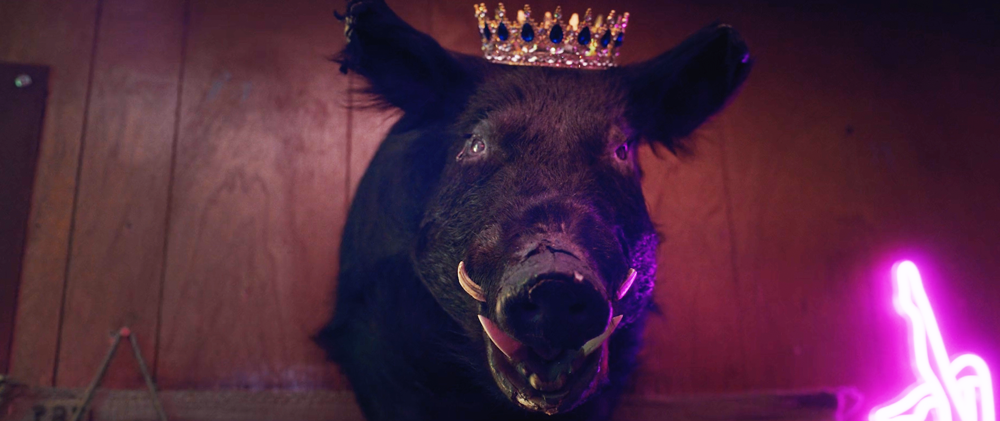
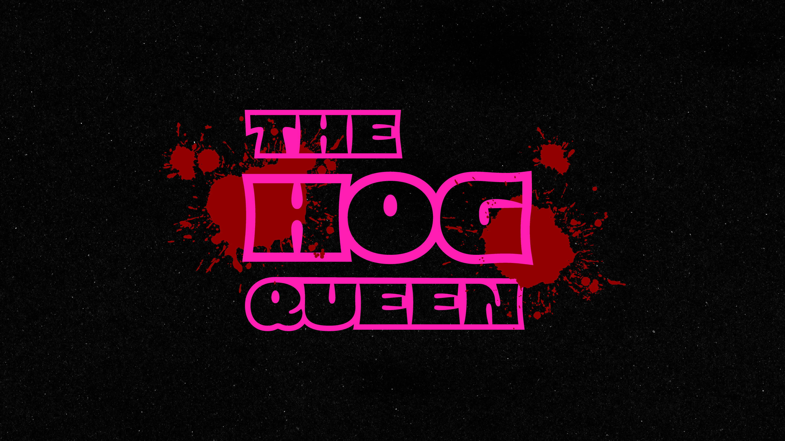
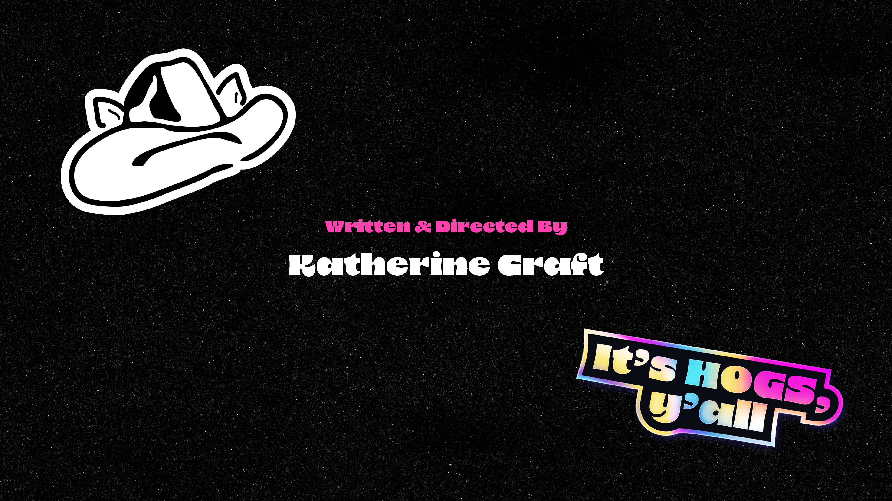
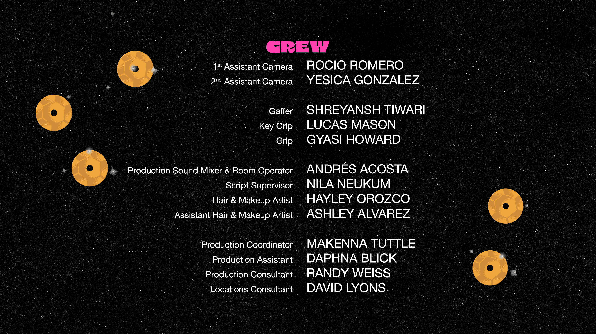
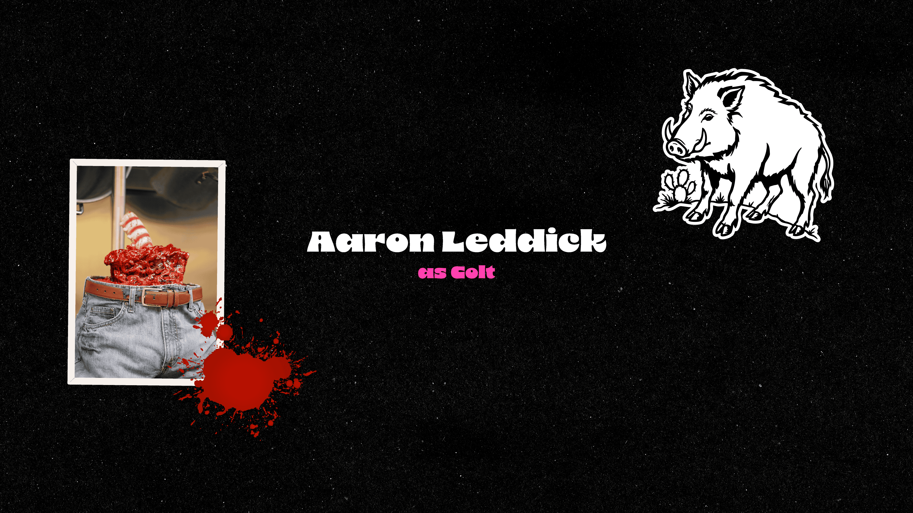
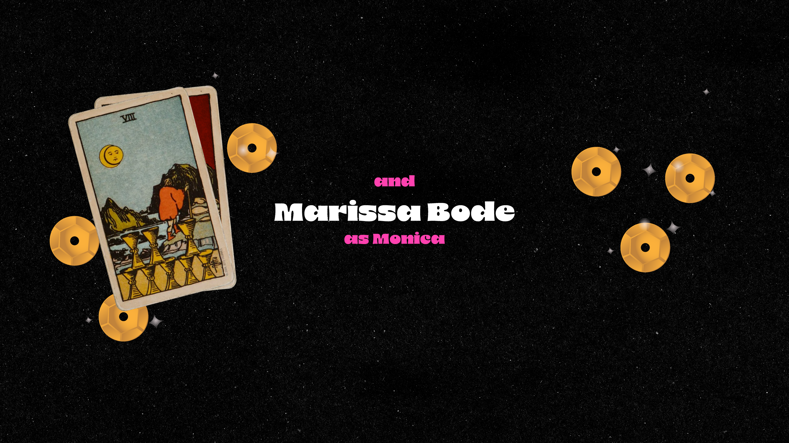
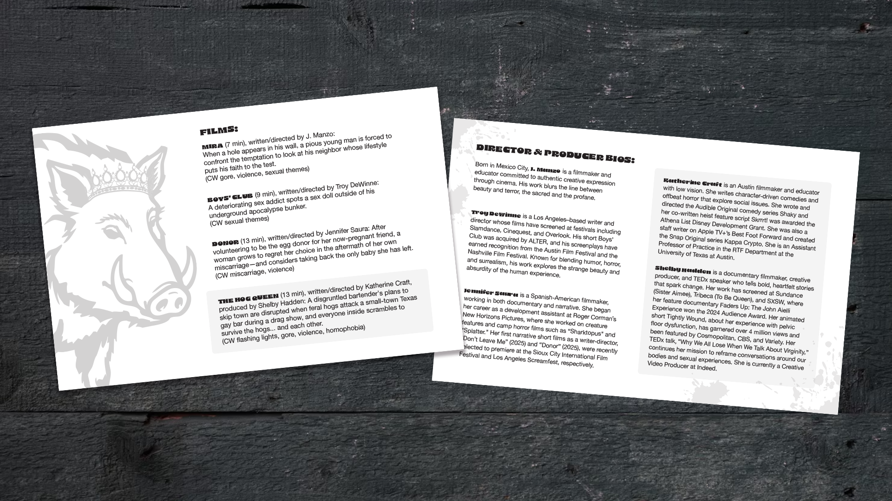
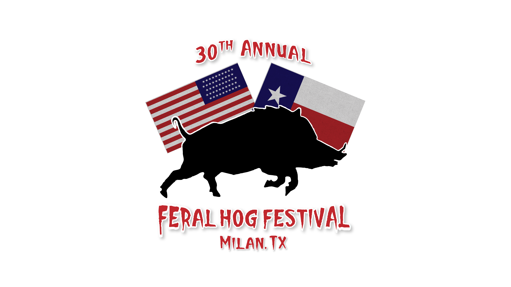
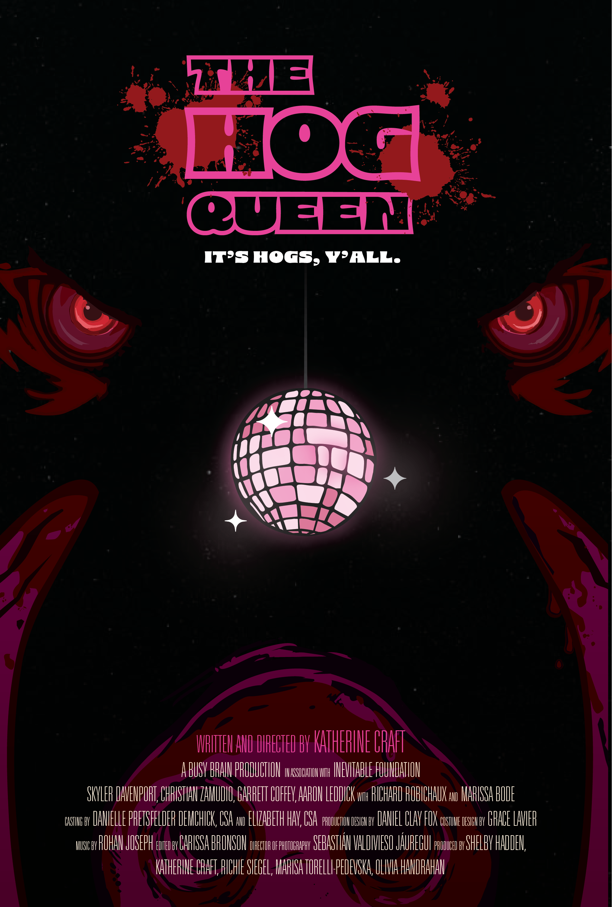

Title Design · End Credits · All Promotional Assets
The Film
When feral hogs attack a small-town Texas gay bar mid-drag show, a disgruntled bartender's plans to skip town get violently derailed — and everyone inside has to survive not just the hogs, but each other.
It's irreverent, queer, genuinely scary, and shot through with dark humor — and the design language had to match every one of those registers at once.

Design Challenge
The tonal challenge of The Hog Queen is also its greatest design opportunity: it's genuinely frightening, funny, queer, and Texan — all at the same time. The design couldn't lean too hard into any single register without losing the others.
Working directly with the director, I developed a title treatment and visual system that feels tactile and handcrafted — like something you'd find stapled to a telephone pole in a small Texas town — while still having the polish expected of a film heading to festivals.
Every deliverable, from the end credits to the screening handout, had to feel like it came from the same world as the film itself.




End Credits
My Role
As the sole graphic designer on the project, I've worked directly alongside the director and producer to build the visual identity of the film across every touchpoint — on screen, in print, and online.
Main Title Card
The title treatment that appears on screen — designed to set the film's tone from the first frame. Fall 2025.
End Credits
Full end credit sequence — typography, layout, and pacing designed to match the film's aesthetic. Fall 2025.
Festival Pitch Decks
Designed pitch materials for film festival submissions — visual storytelling built to get the film in the room. Feb 2026.
Screening Handout
Print collateral designed in black-and-white and distributed at the Austin friends-and-family screening. March 2026.
Social Media Assets
Campaign graphics for building audience ahead of festival screenings.
Movie Poster
The official theatrical poster — the face of the film at festivals and beyond.

Program for the Austin, TX Private Screening
Festival Circuit
After a private friends-and-family screening in Austin, TX in early March 2026, The Hog Queen went on to screen at the Maryland Film Festival — one of the most respected regional film festivals in the country, known for championing bold independent voices.
The film has since been selected for the Atlanta Horror Film Fest Queer Showcase 2026, screening online at atlantahorrorfilmfest.com.

In-film prop: fictional festival logo

Official Theatrical Poster
Next Project
Category Campaigns